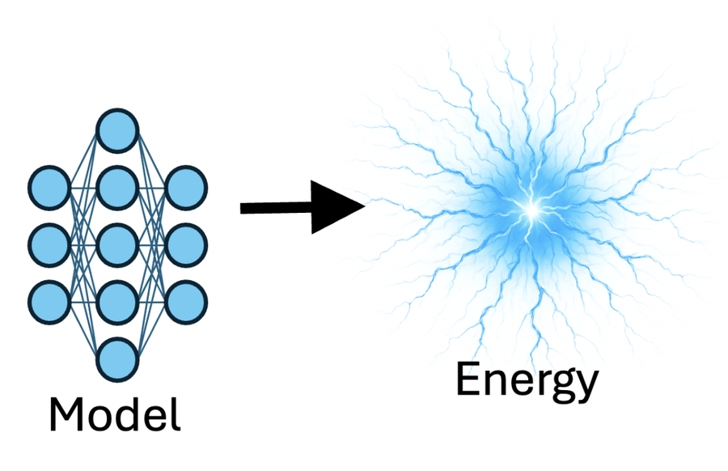
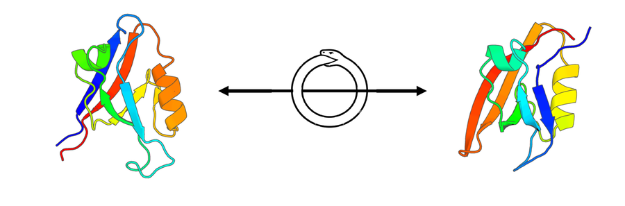

Tools
Recent
MSA_Pairformer
Scaling down protein language modeling with MSA Pairformer

absolute-stability-predictor
Fine-tuned models (ESM3ΔG, SaProtΔG) that predict per-residue protein stability (ΔG) and mutational effects from structure

ProteinEBM
Energy-based models of protein structure learned from sequence via denoising score matching
Protein-Hunter
Exploiting structure hallucination within diffusion for protein design

CIRPIN
Learning circular permutation-invariant representations to uncover putative protein homologs
All tools
ColabFold
Making protein folding accessible to all via Google Colab
ColabDesign
Design proteins using TrRosetta, RosettaFold and AlphaFold
BoltzDesign
Inverting All-Atom Structure Prediction Model for Generalized Biomolecular Binder Design
SMURF
End-to-end learning of multiple sequence alignments with differentiable Smith-Waterman
SoftAlign
End-to-end protein structures alignment
AF2Rank
State-of-the-Art Estimation of Protein Model Accuracy using AlphaFold
AF2BIND
Lightweight and fast prediction of ligand-binding sites
GREMLIN
Web-server and database for predicting contacts. For source code see: C++, Python (Tensorflow), Python (Jax)
CatJac
Categorical Jacobian to uncover pairwise relationships in sequence models. Implemented for: ESM2, ESM3, ProteinMPNN, Evo, gLM2
seqsal
What do generative models learn from protein sequences?
seqmodels
Unified framework for modeling multivariate distributions in biological sequences
map_align
contact map alignment